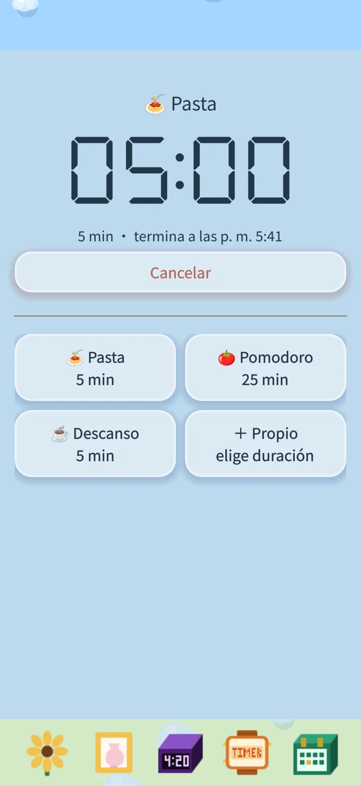
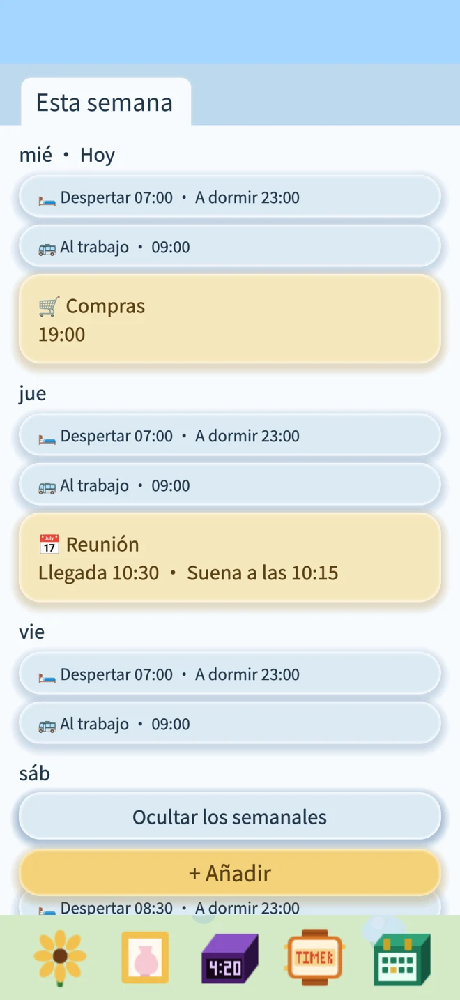
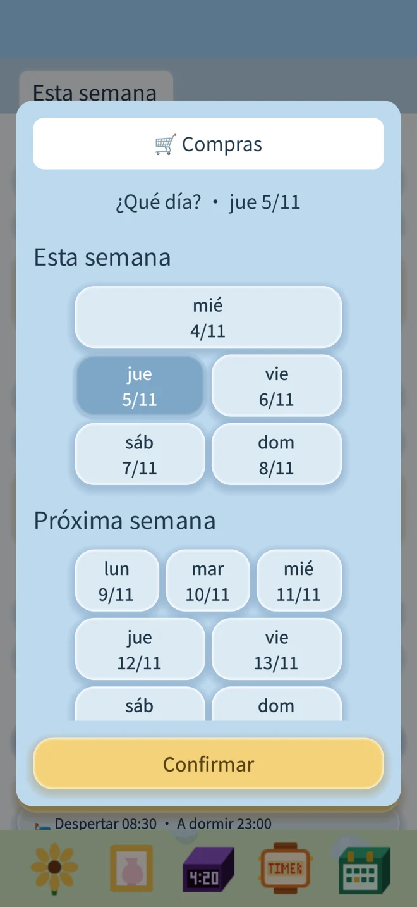
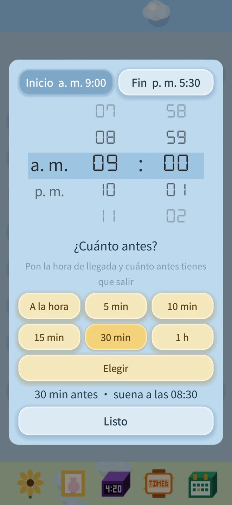

Temporizador: guarda tus duraciones y vuelve a usarlas
Pasta, té o un descanso: elige una plantilla y confirma para empezar.
Guarda tus propios nombres y duraciones para volver a usarlos.

Para quienes organizan su vida por días de la semana.
Si organizas tu vida según lo que haces cada día de la semana, Florecita Despertador es para ti. Trabajar el lunes, recoger a los niños el miércoles, ir a clase el viernes y levantarte más tarde el fin de semana: elige qué hacer y a qué hora recibir un recordatorio cada día. Tus planes se repiten todas las semanas. ¿Cambio de planes? Salta solo una vez; la semana siguiente vuelve a sonar como siempre. La agenda reúne tus rutinas semanales y los planes de una sola vez.
Sin anuncios. Sin suscripciones. Sin conexión a Internet. Todo tuyo.
Tus alarmas, recordatorios y el progreso de tu flor se guardan en tu dispositivo.
Descargar en el App StorePasta, té o un descanso: elige una plantilla y confirma para empezar.
Guarda tus propios nombres y duraciones para volver a usarlos.

Esta semana, la próxima y más adelante: tus planes, ordenados por semanas. Los recordatorios azules se repiten cada semana; los amarillos suenan una sola vez.



Una flor para ti
Elige un girasol o una orquídea y combínalo con la maceta que te guste. Arrastra la regadera para regar y el abono para alimentar tu flor.
Si pasa demasiado tiempo sin agua, se decae. Un poco de agua y se recupera.
También en la pantalla de bloqueo
Usa las alarmas del sistema de iOS 26 y necesita tu permiso. Una vez autorizadas, pueden sonar incluso en modo silencio.
La cuenta atrás puede aparecer en la pantalla de bloqueo y en la Dynamic Island de los modelos compatibles. Al terminar el temporizador, recibes una notificación.
Pon la alarma de mañana. Riega la flor de hoy.